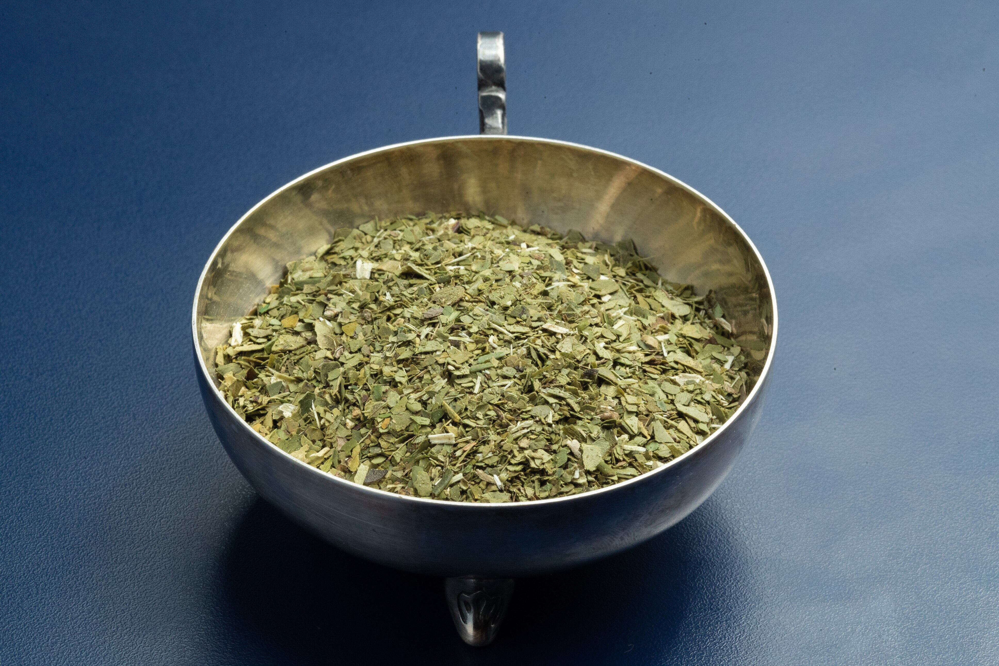
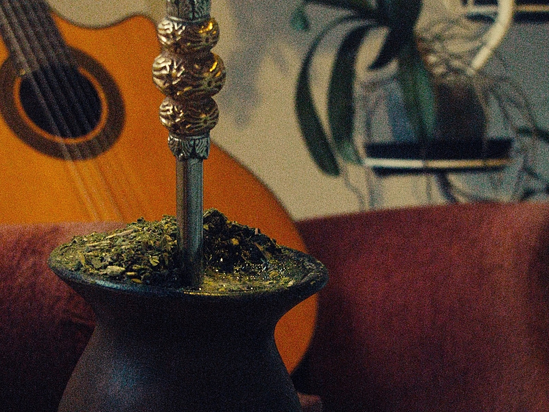
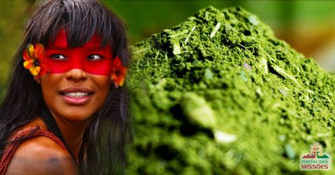

A ERVA-MATE e OS POVOS INDIGENAS
Nesse site sera apresentado o tema: a erva mate e os povos indigenas. o objetvo e mostrar suas principais caracteristicas, sua historia e sua importancia para a arte e a cultura do parana. alem disso, serao destacados aspectos que ajudam a compreender melhor sua influencia na sociedade e no desenvolvimento cultural paranaense.

A ERVA-MATE E OS POVOS INDIGENAS
nesse site vamos apresentar, como os povos indigenas descobriram a ERVA MATE

Curiosidades
Curiosidades 1
• Origem Sagrada (Caá-Yari): Para os Guaranis, a erva-mate era um presente dos deuses. Segundo a lenda, o deus Tupã abençoou um velho pajé e sua filha com a planta para devolver-lhes as forças. A filha, Yari, tornou-se a deusa protetora dos ervais (Caá-Yari).
a ERVA-MATE possui raizes profundas na historia dos povos originarios, sendo os povos GUARANIe KAINGANG seus principais disseminadores ancestrais.

curiosidade 2
• Consumo Primitivo: Antes do chimarrão quente, os indígenas mastigavam as folhas verdes para ter energia em caminhadas. Quando faziam a infusão (com água fria), bebiam direto do porongo e filtravam as folhas com os próprios dentes, cuspindo os pedaços.
Erva-Mate e os Povos Indígenas
Vou compartilhar imagens sobre a erva mate e os povos indigenas